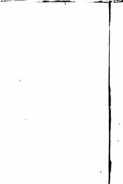

SVElektr stansiyalari va podstansiyalarining elektr jihozlari hamda ularni loyihalash bo'yicha o'quv qo'llanma.
Ushbu darslik elektr stansiyalari va podstansiyalarning asosiy elektr jihozlari, jumladan sinxron generatorlar, kuch transformatorlari va elektr apparatlari haqida batafsil ma'lumot beradi. Kitobda qisqa tutashuv toklarini hisoblash metodikasi, elektr ulanish sxemalari va taqsimlash qurilmalarining konstruksiyalari yoritilgan.